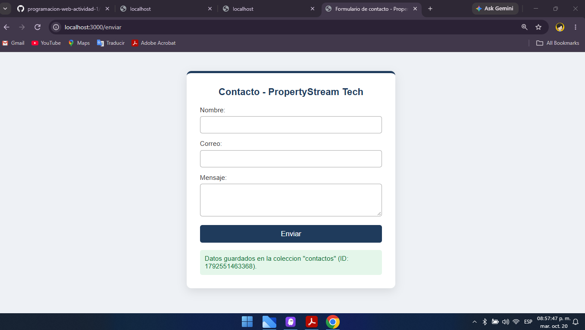

| Institución | Tecnológico de Estudios Superiores de Ecatepec |
| Carrera | División de Ingeniería en Sistemas Computacionales |
| Materia | Programación Web |
| Nombre | Marcos Joaquín García Villanueva |
| Nombre del Profesor | Alejandra González Sánchez |
| Grupo | 5501 |
| Actividad | 9 — Tratamiento de formularios del lado del servidor |
Los formularios son la principal vía de entrada de datos en una aplicación web: registro de usuarios, publicación de propiedades, contacto, etc. Sin embargo, los datos que envía un usuario no se pueden dar por buenos sin más: deben recibirse, validarse y almacenarse de forma estructurada y segura en el servidor. Este proceso se conoce como el tratamiento de formularios del lado del servidor.
En el contexto de PropertyStream Tech, este módulo es la base de funcionalidades como la publicación de propiedades en Smart Listings o el registro de usuarios e inquilinos en RentStream. Este documento presenta un módulo funcional en Node.js que recibe los datos de un formulario, valida los campos obligatorios y el formato del correo electrónico, y almacena la información validada en una colección (simulando Firebase). Se documentan las validaciones implementadas y la conexión con la base de datos, y el código se sube a GitHub.
El formulario captura tres campos relevantes y los envía al servidor mediante el método POST a la ruta /enviar.
<form method="POST" action="/enviar"> <label>Nombre:<input type="text" name="nombre"></label> <label>Correo:<input type="text" name="correo"></label> <label>Mensaje:<textarea name="mensaje"></textarea></label> <button type="submit">Enviar</button> </form>
Explicación: cada campo tiene un atributo name que el servidor usará para identificar el dato. El método POST envía la información en el cuerpo de la petición, lo adecuado para datos que se van a almacenar.
El servidor Node.js recibe el cuerpo de la petición, lo interpreta y ejecuta las validaciones antes de guardar nada.
req.on("data", chunk => { cuerpo += chunk; });
req.on("end", () => {
const datos = {};
cuerpo.split("&").forEach(par => {
const [clave, valor] = par.split("=");
datos[clave] = decodeURIComponent((valor || "").replace(/\+/g, " "));
});
// ... validar y guardar
});
Explicación: los datos llegan en fragmentos (chunks) que se van concatenando. Al terminar, se separan por & y por = para reconstruir cada par campo-valor, decodificando los caracteres especiales.
function validarDatos(datos) {
const errores = [];
// Campos obligatorios
if (!datos.nombre || datos.nombre.trim() === "") errores.push("El nombre es obligatorio.");
if (!datos.correo || datos.correo.trim() === "") errores.push("El correo es obligatorio.");
if (!datos.mensaje || datos.mensaje.trim() === "") errores.push("El mensaje es obligatorio.");
// Formato de correo valido (expresion regular)
const regexCorreo = /^[^\s@]+@[^\s@]+\.[^\s@]+$/;
if (datos.correo && !regexCorreo.test(datos.correo)) {
errores.push("El formato del correo no es válido.");
}
return errores;
}
Explicación de las validaciones:
trim() para ignorar espacios).texto@dominio.extension. Si no cumple, se rechaza.Una vez que los datos pasan todas las validaciones, se almacenan de forma estructurada en una colección. En este módulo se simula la colección con un archivo JSON que conserva la misma estructura que un documento de Firebase.
function guardarEnColeccion(datos) {
let coleccion = [];
if (fs.existsSync(COLECCION)) {
coleccion = JSON.parse(fs.readFileSync(COLECCION, "utf8"));
}
const documento = {
id: Date.now(), // identificador unico (como doc.id)
nombre: datos.nombre.trim(),
correo: datos.correo.trim(),
mensaje: datos.mensaje.trim(),
creado: new Date().toISOString()
};
coleccion.push(documento);
fs.writeFileSync(COLECCION, JSON.stringify(coleccion, null, 2));
return documento;
}
Explicación: cada envío válido crea un documento con un identificador único y una marca de tiempo, y se agrega a la colección. La estructura (id, campos, fecha) es idéntica a la que tendría en Firebase.
// Con Firebase real:
const db = firebase.firestore();
await db.collection("contactos").add({
nombre: datos.nombre,
correo: datos.correo,
mensaje: datos.mensaje,
creado: firebase.firestore.FieldValue.serverTimestamp()
});
El módulo integra los pasos anteriores en un único flujo: el usuario llena el formulario, el servidor recibe el POST, valida los datos y, si son correctos, los guarda en la colección y confirma el guardado; si hay errores, los muestra sin guardar.
| Etapa | Qué ocurre |
|---|---|
| 1. Envío | El formulario manda nombre, correo y mensaje por POST. |
| 2. Recepción | El servidor reconstruye los datos del cuerpo de la petición. |
| 3. Validación | Se comprueban obligatorios y formato de correo. |
| 4. Almacenamiento | Si es válido, se guarda un documento en la colección. |
| 5. Respuesta | Se confirma el guardado o se muestran los errores. |
Este módulo es directamente aplicable a la empresa. En Smart Listings gestionaría la publicación de propiedades, validando que cada anuncio tenga los campos requeridos antes de guardarlo. En RentStream registraría datos de usuarios e inquilinos, asegurando que el correo tenga un formato válido para poder contactarlos. En ambos casos, los datos se almacenarían en Firebase de forma estructurada y el código se versionaría en GitHub.
A continuación se muestra la captura del formulario en funcionamiento en
http://localhost:3000, con el mensaje de confirmación tras
guardar un registro válido en la colección (archivo servidor.js).

El tratamiento de formularios del lado del servidor es esencial para construir aplicaciones web seguras y confiables. El módulo desarrollado en Node.js recibe los datos de un formulario, valida los campos obligatorios y el formato del correo mediante expresiones regulares, y almacena únicamente la información válida de forma estructurada, simulando la colección de Firebase. Este desarrollo es directamente integrable en Smart Listings y RentStream, y el código quedó documentado y versionado en GitHub, cumpliendo todos los pasos de la actividad.